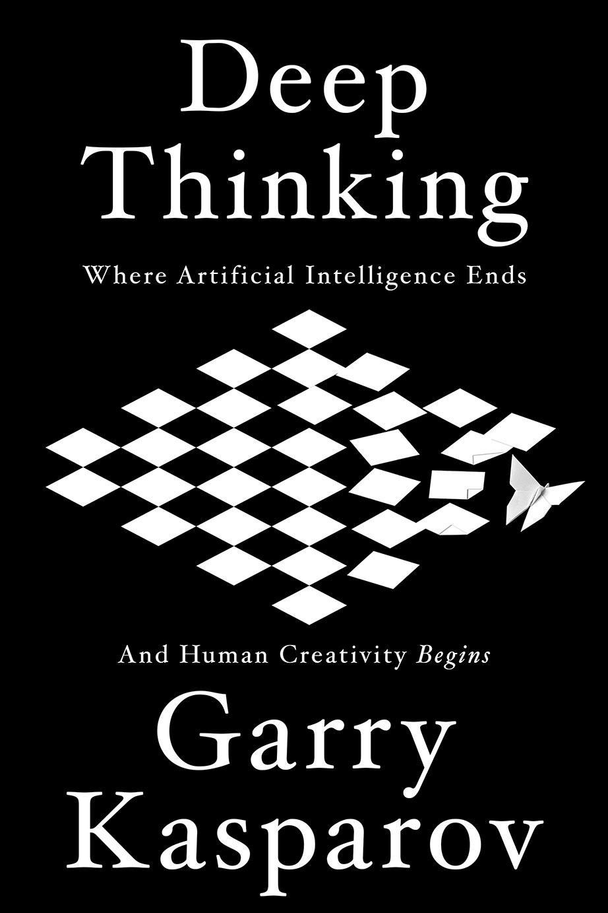

加里·卡斯帕罗夫（Garry Kasparov）是公认的现代国际象棋史上最伟大的棋手，他自1985年起持续十五年雄踞世界排名第一，赢得多次世界冠军头衔。1997年，他在由IBM开发的计算机程序"深蓝"（Deep Blue）手下败北，成为人类历史上首位在正式比赛条件下输给计算机的世界棋王，这场对决由此成为人工智能史上最受关注的标志性事件之一。《深度思考》出版于2017年，由公共事务出版社（PublicAffairs）发行，是卡斯帕罗夫对这段经历及其背后更深层问题——机器智能与人类创造力的关系——的系统反思，也是他历经二十年沉淀之后对人工智能未来的前瞻性判断。
本书并非一部失败者的哀叹，而是一次跨越历史的智识重建。卡斯帕罗夫追溯了人类试图用机器模拟甚至超越棋局智力的漫长历程——从18世纪的土耳其机器人骗局，到香农在1950年提出的国际象棋程序理论框架，再到1980至90年代计算能力的指数级跃升如何将程序从业余水平推向冠军水平。他以第一视角详细重现了与深蓝的两度对决：第一次他赢了，第二次他输了，而他对第二场对决中某些走法至今存有疑虑，认为人类干预的痕迹超出了通常的程序行为模式。这些细节使本书既具有私人回忆录的温度，也具有科技史著作的分量。
卡斯帕罗夫在书中着力论证的核心命题是：人类在与机器的协作中拥有独特的比较优势，而不是被机器替代的宿命。他以"自由式象棋"（freestyle chess，即人机协作对弈）为案例指出，一组普通棋手配合台式电脑，往往能够击败单纯依靠超级计算机的对手——因为人类能够提供直觉、战略框架和对局势整体节奏的把握，而这些恰恰是早期人工智能的盲区。他的结论是：面对人工智能的崛起，人类应当专注于培养那些机器尚难复制的能力——提出正确的问题、进行道德判断、在不确定性中做出创造性选择。
对于关注人工智能与产业变革的读者而言，《深度思考》提供了一个独一无二的叙述位置：站在历史最前沿的亲历者，以棋局为透镜，折射出人机关系演变的宏观轨迹。卡斯帕罗夫并不回避对人工智能过度乐观或过度悲观的两种论调，而是试图在两者之间划出一条务实的中间道路。这种立场在一个充斥着末日预言与科技乌托邦的舆论环境中尤为难得，也使本书成为理解人工智能对人类工作与创造力影响的最具说服力的非技术性读本之一。